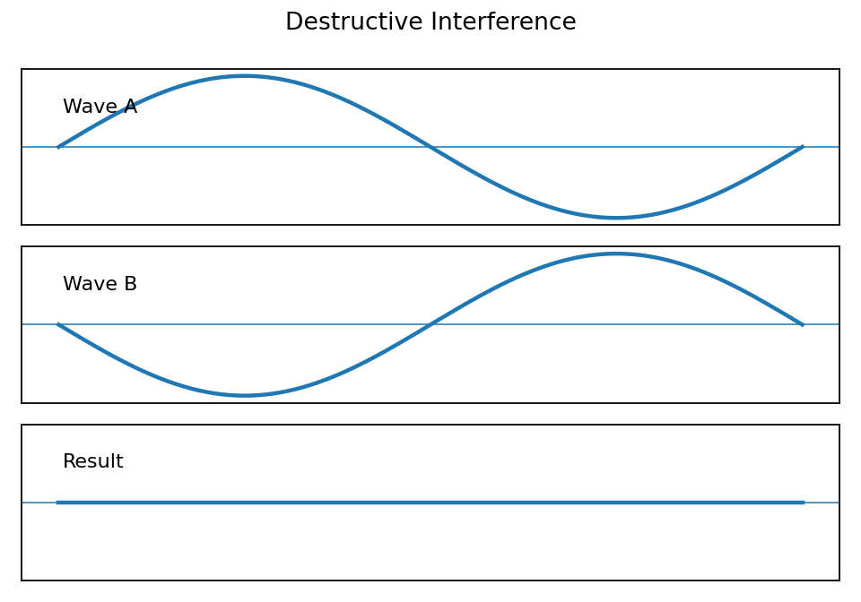

Wave Phenomenon Snapshot Sort
Name:
Show work and mark answers clearly.
Wave Lab Sort


Identify which diagram best shows a standing wave and which best shows interference. Explain the evidence.
Sort each example as reflection, Doppler effect, resonance, interference, or beats: canyon echo; ambulance pitch change; a swing pushed at the right time; two close notes making pulses. Give one reason for each.
Sort these: guitar body vibrating strongly, two speakers making loud/quiet spots, tuner hearing beats, sound bouncing off a wall, sound bending in air layers.
Classify: thunder echoing near mountains, race car pitch change, bridge vibration, noise-canceling headphones, two instruments slightly out of tune.

Identify which diagram best shows a standing wave and which best shows interference. Explain the evidence.
For each clue, name the phenomenon: repeated loud-soft pulses; reflected sound; observed pitch changes because source moves; large vibration at natural frequency; waves canceling.
A student classifies beats as echoes because both are repeated sounds. Correct the classification and explain the difference.